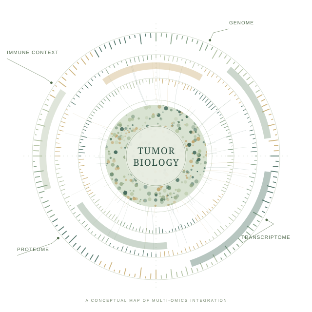

Jianhui
(Duncan) Gong.
Connecting molecular layers.
Understanding cancer.
I integrate multi-omics data to explore tumor biology and uncover biomarkers of treatment response.

From reading genomes
to understanding tumors.
I’m a bioinformatics researcher with a Ph.D. from the University of Michigan. My work brings together genomics, transcriptomics, proteomics, post-translational modifications, and immunopeptidomics to make sense of cancer biology.
My research spans CPTAC cancer studies, precision oncology platforms, machine learning, and synthetic genomics. Across these areas, I’m interested in turning complex molecular data into biologically meaningful and clinically interpretable insights.
Publication status reflects the October 2026 CV. ¹ Five BGI Innovation Class students mentored.
Many layers.
One connected question.
How can we connect molecular variation to tumor behavior and therapeutic response?
Python · R · Perl · C/C++ · Machine learning · Reproducible workflows · Multi-omics integration
Ideas, in print.
No publications match this search. Try another keyword or filter.
Experience & education.
A path through computational biology, synthetic genomics, and translational cancer research.
RESEARCH APPOINTMENTS
EDUCATION
Science grows
through people.
Mentorship, peer review, and shared tools are part of how I contribute to the research community.
Full CV (Word)Good questions start
with a conversation.
For research conversations and collaborations in cancer proteogenomics, multi-omics, and computational biology.
jhgong@umich.edu